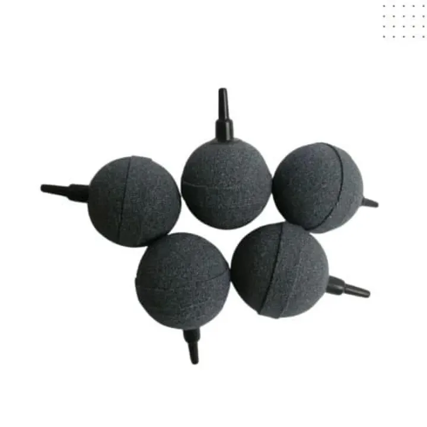

من مجموعة أكوا هافنAQUA HAVEN / THE COLLECTION
حجر هواء للأحواض – قطعة أو قطعتان
حجر هواء للأحواض، حجر هواء يحول تدفق المضخة إلى فقاعات دقيقة للمساعدة على تحريك الماء ودعم الأكسجة.
٥ ر.س
متاح ضمن اللقطة المرجعية
مساحة للاكتشاف، قبل الاختيار.
واصل استكشاف المجموعة هذه معاينة للتصميم. الأسعار والخيارات والتوفر مرجعية وغير متزامنة؛ لا يمكن الطلب أو الدفع من هذه الصفحة.
A CLOSER LOOK
نظرة أقرب.
حجر هواء للأحواض — حجر هواء يحول تدفق المضخة إلى فقاعات دقيقة للمساعدة على تحريك الماء ودعم الأكسجة.
المواصفات الأساسية
- النوع: حجر هواء
- الخيارات: قطعة واحدة أو قطعتان
- التشغيل: يتطلب مضخة هواء وخرطومًا
المميزات
- يساعد على توزيع الهواء داخل الحوض
- مناسب للاستخدام مع مضخات الهواء القياسية
- تركيب بسيط
الاستخدام والعناية
انقعه في ماء الحوض قبل الاستخدام ثم وصّله بالخرطوم ونظفه عند انخفاض الفقاعات.
ملاحظة مهمة
المضخة والخرطوم غير مشمولين ما لم يُذكر ذلك في محتويات الطلب.